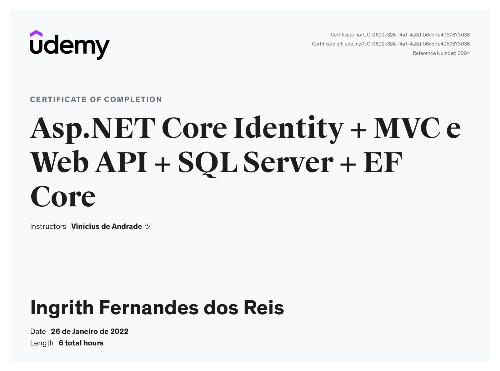
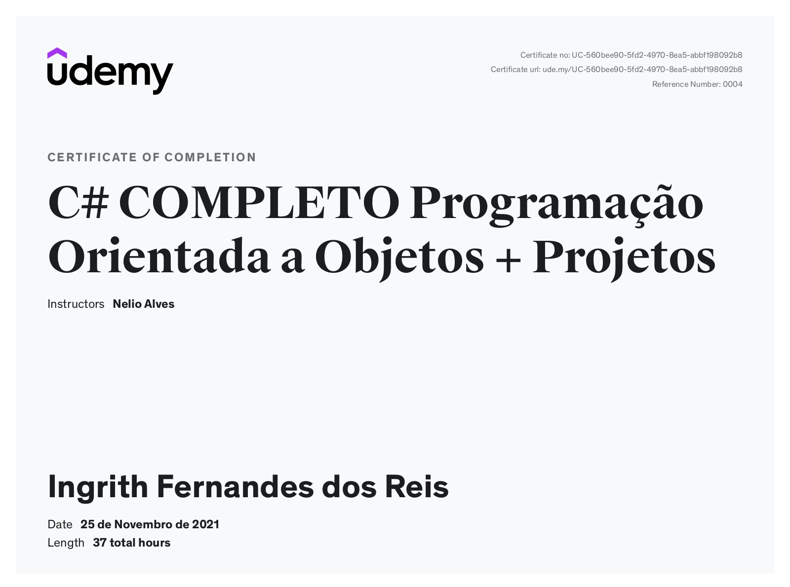
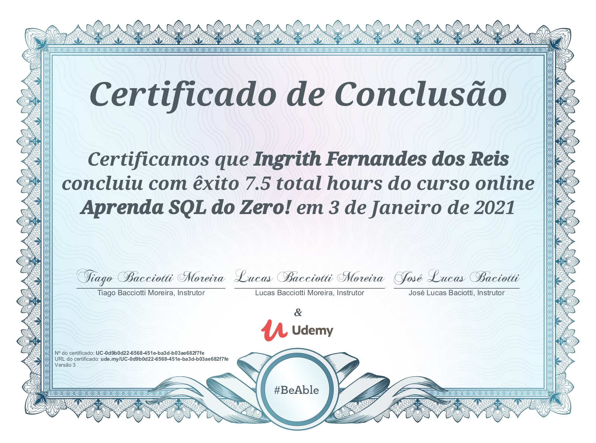

Aplicações em C#
Aplicação para restaurante com API integrada a Banco de dados e uso de roles
Um dos desafio que abracei foi cursar Análise e Desenvolvimentos de Sistemas no Centro Universitário Senac.Nos desafios rotineiros, tivemos de encontrar soluções práticas que pudessem ser facilmente aplicadas com tecnologia.
Neste caso, criei uma aplicação para pedidos em restaurantes, visando um público de peqeno porte e que atendessem a interiores do Brasil
Certificados

Certificado em ApNet Core Identity com MVC

Certificado em Programação C#
